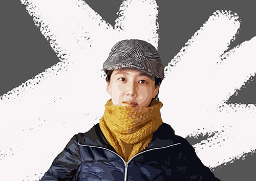

This is me. I try to surround myself with pretty things - Visual Arts + Music + Cats + Tasty food + Saffron Masala Chai - whenever possible. Here I am showcasing the final projects from the Digital Skills for Visual Media course at CCSF. Hope you enjoy my works!
